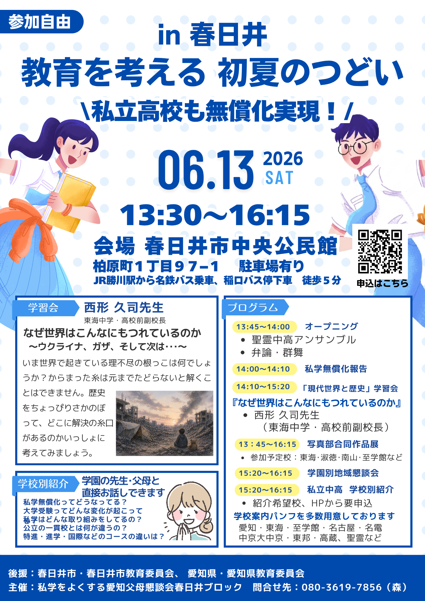

参加自由
教育を考える 初夏のつどい
in 春日井
私立高校も無償化実現！
2026年6月13日（土）
13:30〜16:15
教育や進学、私学無償化について、学び・交流できるつどいです。
開催概要
日時
2026年6月13日（土）
13:30〜16:15
2026年6月13日（土）
13:30〜16:15
会場
春日井市中央公民館
春日井市柏原町1丁目97-1
春日井市中央公民館
春日井市柏原町1丁目97-1
アクセス
JR勝川駅から名鉄バス乗車、
「稲口」バス停下車 徒歩5分
JR勝川駅から名鉄バス乗車、
「稲口」バス停下車 徒歩5分
駐車場
駐車場あり
駐車場あり
学習会
講師：西形 久司 先生
東海中学・高校前副校長/現 南山男子部 教員
テーマ
なぜ世界はこんなにもつれているのか
〜ウクライナ、ガザ、そして次は……〜
いま世界で起きている理不尽の根っこは何でしょうか。からまった糸は、元までたどらないと解くことはできません。歴史をちょっぴりさかのぼって、どこに解決の糸口があるのか、一緒に考えてみましょう。
学校別紹介・相談
学園の先生・父母と直接お話しできます。
- 私学無償化ってどうなってる？
- 大学受験ってどんな変化が起こっているの？
- 私学はどんな取り組みをしているの？
- 公立の一貫校とは何が違うの？
- 特進・進学・国際などのコースの違いは？
学校案内パンフを多数用意しております。
紹介予定校：愛知・東海・至学館・名古屋・名電・中京大中京・東邦・高蔵・聖霊 など
プログラム
13:45〜14:00
オープニング
聖霊中高アンサンブル／弁論・群舞
聖霊中高アンサンブル／弁論・群舞
14:00〜14:10
私学無償化報告
14:10〜15:20
「現代世界と歴史」学習会
『なぜ世界はこんなにもつれているのか』
講師：西形 久司 先生
『なぜ世界はこんなにもつれているのか』
講師：西形 久司 先生
13:45〜16:15
写真部合同作品展
参加予定校：東海・淑徳・南山・至学館など
参加予定校：東海・淑徳・南山・至学館など
15:20〜16:15
学園別地域懇談会
15:20〜16:15
私立中高 学校別紹介
紹介希望校は、ホームページからお申し込みください。
紹介希望校は、ホームページからお申し込みください。
主催・お問い合わせ
主催：私学をよくする愛知父母懇談会 春日井ブロック
後援：春日井市・春日井市教育委員会、愛知県・愛知県教育委員会
お問い合わせ：080-3619-7856（森）
イベントチラシ
